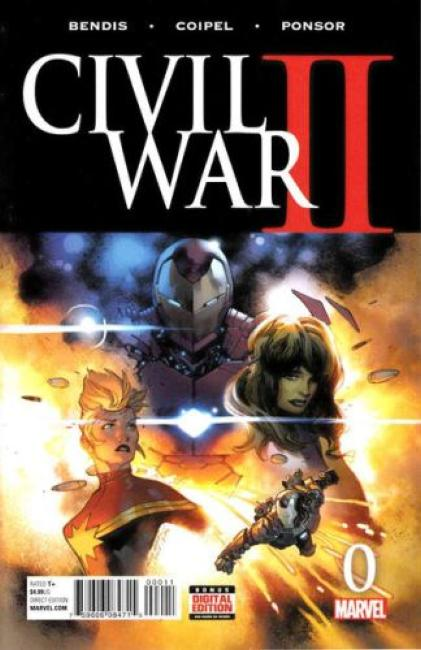

9 issues 2016 Marvel
Written by Brian Michael Bendis. Art and Cover by Olivier Coipel. From the creative team that brought you House of M and Siege comes a blistering first chapter in Marvel's new explosive event. Watch as the players are introduced and the table is set for a storyline that fans will be talking about for years.
The previous Civil War series made a lot of money, so you know Marvel is going to keep doing it until everyone stops buying it.
Civil War II related issues:
- Civil War II Amazing Spider-Man
- Civil War II Amazing Spider-Man TPB
- Civil War II Choosing Sides
- Civil War II Choosing Sides TPB
- Civil War II Fallout TPB
- Civil War II Gods of War
- Civil War II Gods of War TPB
- Civil War II HC
- Civil War II Kingpin
- Civil War II Kingpin TPB
- Civil War II Poster by Michael Cho
- Civil War II The Accused
- Civil War II The Fallen
- Civil War II The Oath
- Civil War II TPB
- Civil War II Ulysses
- Civil War II X-Men
- Civil War II X-Men TPB